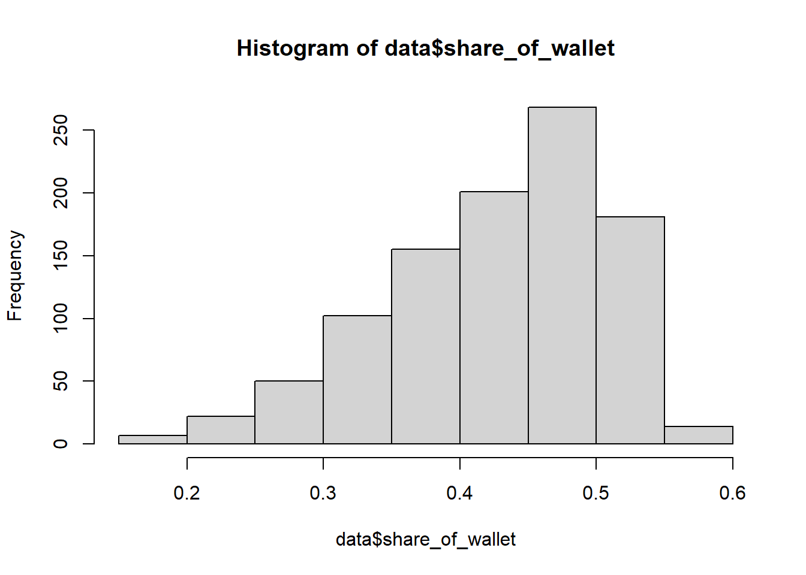

library(AER)
# Näide: palk sõltub haridusest, kus haridus on endogeenne,
# instrumentideks näiteks regionaalsed või perekondlikud tunnused
iv_mod <- ivreg(wage ~ educ + exper + I(exper^2) |
motheduc + fatheduc + exper + I(exper^2),
data = mydata)
summary(iv_mod)8 Instrumentmuutuja
8.1 Seade
Instrumentmuutuja meetod (instrumental variable method, IV) on üks olulisemaid tööriistu olukordades, kus regressioonimudeli selgitav tunnus on endogeenne – st korreleerub vealiikmega. Sellisel juhul on tavalise OLS-regressiooni hinnangud nihkega ja ei ole mõjusad isegi väga suurtes valimites. IV-meetod püüab eraldada selle osa varieeruvusest, mis on “puhas” ja ei ole saastunud jälgimata teguritest.:contentReferenceoaicite:0
Motivatsioon: endogeensus ja väljajäetud muutuja nihe
Olgu lihtne lineaarne mudel
\[ Y_i = \alpha + \beta D_i + \gamma^\top X_i + u_i, \]
kus
- \(Y_i\) – tulemus (nt palk),
- \(D_i\) – meede või huvipakkuv selgitaja (nt haridus, tööturukoolitus),
- \(X_i\) – kontrollmuutujad (nt vanus, sugu, haridus jne),
- \(u_i\) – vealiige, mis sisaldab kõiki muid, mudelisse mitte kaasatud tegureid.
OLS-meetodi põhieelduseks on, et selgitavad tunnused on eksogeensed:
\[ \mathbb{E}[u_i \mid D_i, X_i] = 0 \quad\Longleftrightarrow\quad \operatorname{Cov}(D_i, u_i) = 0. \]
Paljudes rakendustes see ei kehti:
- hariduse ja palga puhul on \(D_i\) (haridus) sageli korreleeritud võimekuse, motivatsiooni, perekondliku tausta jms-ga, mis on vealiikmes \(u_i\);
- tööturukoolituse ja palga puhul osalevad koolitusel suurema tõenäosusega need, kes on motiveeritumad või kellel on paremad kontaktid;
- lojaalsusprogrammi mõju ostusummale: programmiga liituvad pigem need kliendid, kes nagunii poes käivad.
Kui \(\operatorname{Cov}(D_i, u_i) \neq 0\), tekib väljajäetud muutuja nihe (omitted variable bias) ning OLS-i hinnang \(\hat\beta^{OLS}\) ei ole põhjuslik mõju.
8.2 Mis on instrumentmuutuja?
IV-meetodi idee on kasutada lisaks instrumenti \(Z_i\), mis mõjutab probleemset selgitajat \(D_i\), kuid ei mõjuta tulemust \(Y_i\) muul viisil kui \(D_i\) kaudu.
Informaalne graafik:
- \(Z_i\) → mõjutab \(D_i\),
- \(D_i\) → mõjutab \(Y_i\),
- taustamuutuja \(A_i\) (nt võimekus) mõjutab nii \(D_i\) kui \(Y_i\),
- tahame sulgeda “tagaukse” \(D_i \leftarrow A_i \rightarrow Y_i\).
Instrumentmuutuja \(Z_i\) on sobiv, kui ta täidab kolme põhi-eeldust:
Relevantsus: \(Z_i\) on piisavalt tugevasti seotud \(D_i\)-ga
\[ \operatorname{Cov}(Z_i, D_i) \neq 0. \]Eksogeensus: \(Z_i\) ei korreleeru vealiikmega
\[ \operatorname{Cov}(Z_i, u_i) = 0. \]Väljajätmise eeldus (exclusion restriction): \(Z_i\) ei mõjuta \(Y_i\) otseselt, vaid ainult läbi \(D_i\); st puudub otsene tee \(Z_i \to Y_i\).
Relevantsust saab andmetest testida (nõrgad instrumendid), eksogeensust ja väljajätmise eeldust tuleb enamasti põhjendada teoreetiliselt ja institutsionaalse konteksti abil.
8.3 Lihtne näide ja Waldi valem
Vaatame kõige lihtsamat juhtu, kus:
- \(D_i\) on binaarne (osales/ei osalenud),
- \(Z_i\) on binaarne instrument (nt poliitikamuutus, juhuslik loosimine),
- kontrollmuutujaid ei ole.
Mudel:
\[ Y_i = \alpha + \beta D_i + u_i. \]
IV loogika:
- võrdleme keskmist tulemust nende vahel, kellel \(Z_i=1\) ja \(Z_i=0\);
- võrdleme, kui palju erineb keskmine osalemine \(D_i\) nende kahe grupi vahel.
Wald-hinnang on:
\[ \hat\beta^{IV} = \frac{\mathbb{E}[Y_i \mid Z_i = 1] - \mathbb{E}[Y_i \mid Z_i = 0]} {\mathbb{E}[D_i \mid Z_i = 1] - \mathbb{E}[D_i \mid Z_i = 0]}. \]
Tähendused:
- nimetaja kirjeldab instrumendi mõju osalus-tõenäosusele;
- lugeja kirjeldab instrumendi mõju tulemusele;
- suhe ütleb, kui palju \(Y_i\) muutub instrumendi poolt esile kutsutud ühikulise muutuse kohta \(D_i\)-s.
Kui instrument on binaarne ja kontrollmuutujaid ei ole, langeb see kokku klassikalise Waldi hinnanguga.
8.4 Kahesammuline vähimruutude meetod (2SLS)
Üldisemal juhul on:
\[ Y_i = \alpha + \beta D_i + \gamma^\top X_i + u_i, \] \[ D_i = \pi_0 + \pi_1 Z_i + \pi_2^\top X_i + v_i, \]
kus \(Z_i\) võib olla skalaarkomponent või vektor (mitu instrumenti).
Kahesammuline vähimruutude meetod (Two-Stage Least Squares, 2SLS) toimib järgmiselt.
Esimene samm (esimene etapp):
\[ D_i = \hat\pi_0 + \hat\pi_1 Z_i + \hat\pi_2^\top X_i + \hat v_i. \]
- Hinnatakse regressioon \(D_i\)-le instrumendi ja kontrollmuutujate peale.
- Saadakse prognoosid \(\hat D_i = \hat\pi_0 + \hat\pi_1 Z_i + \hat\pi_2^\top X_i\).
- Sisuliselt eraldame \(D_i\) selles osas, mida selgitavad \(Z_i\) ja \(X_i\), ning eemaldame osa, mis on korreleeritud vealiikmega.
Teine samm (teine etapp):
\[ Y_i = \alpha + \beta \hat D_i + \gamma^\top X_i + \varepsilon_i. \]
- Asendame algses mudelis \(D_i\) tema prognoosiga \(\hat D_i\) ning kasutame OLS-i.
- Saadud \(\hat\beta^{2SLS}\) on IV-hinnang, mis kasutab ainult seda osa $D_i varieeruvusest, mida instrument \(Z_i\) ja \(X_i\) suudavad selgitada.
R-is saab seda mugavalt teha näiteks paketiga AER:
Parempoolsel poolel: vasak pool enne | on struktuurne mudel (Y ~ endogeensed + eksogeensed tunnused), parem pool pärast | on instrumendid ja eksogeensed tunnused.
8.5 Sobivate instrumentide kriteeriumid
Instrumentide jaoks kehtivad järgmised põhinõuded.
Relevantsus
Instrument peab olema piisavalt tugevalt seotud selgitava tunnusega \(D_i\):
- \(\operatorname{Cov}(Z_i, D_i) \neq 0\)
- Esimeses etapis saab seda hinnata F-statistikuga. Lihtne rusikareegel:
- kui \(F < 10\), võib instrument olla nõrk;
- nõrkade instrumentide korral on IV-hinnangud väga ebatäpsed (suured standardvead) ja võivad olla tugevalt nihkega.
Eksogeensus ja väljajätmise eeldus (exclusion restriction)
- Instrument ei tohi korreleeruda vealiikmega \(u_i\):
- \(\operatorname{Cov}(Z_i, u_i) = 0\).
- Instrument ei tohi mõjutada \(Y_i\) otse, vaid üksnes läbi \(D_i\):
- puudub otsene tee \(Z_i \to Y_i\); mõju peab käima ainult \(Z_i \to D_i \to Y_i\) kaudu.
Kui instrumente on rohkem kui endogeenseid muutujaid (üleidentifitseeritud mudel), saab eksogeensust osaliselt testida üleidentifitseerimiskatsetega (Sargani või Hansen–J test), kontrollides, kas kõik instrumendid korraga sobituvad mudelisse ilma oluliste vastuoludeta.
8.6 Nõrgad ja valed instrumendid
- Kui \(Z_i\) ei korreleeru \(D_i\)-ga, on tegemist ebaoluliste instrumentidega; IV-meetod ei anna lisainfot ja hinnangud käituvad halvasti.
- Kui seos on olemas, kuid väga nõrk, on tegemist nõrkade instrumentidega. Siis on IV-hinnangud asümptootiliselt küll mõjusad, kuid väikeses valimis väga ebatäpsed.
- Kui instrument korreleerub vealiikmega (nt mõjutab tegelikult otseselt \(Y_i\)) või on seotud jälgimata teguritega \(A_i\), siis on instrument vigane. Sellisel juhul annab IV-meetod valesuunalise hinnangu.
Praktikas on tihti valik:
- kas kasutada nihkega, kuid väiksema variatsiooniga OLS-hinnangut;
- või kasutada IV-meetodit, mis põhineb tugevatele eeldustele ja millel võivad olla suured standardvead.
8.7 Heterogeensed mõjud ja LATE
Kui mõju \(\beta\) ei ole kõigi jaoks sama (heterogeensed mõjud), ei pruugi IV-hinnang kirjeldada keskmist mõju kõigile. Binaarse instrumendi ja binaarse meetme korral, täiendavate eelduste (näiteks monotoolsuse) all, identifitseerib Waldi/IV-hinnang nn kohaliku keskmise mõju (Local Average Treatment Effect, LATE):
- LATE on keskmine mõju nende isikute seas, kelle meedme staatus muutub instrumendi väärtuse muutumise tõttu (compliers ehk “allujad”).
Ülejäänud rühmad:
- never-takers – ei osale kunagi;
- always-takers – alati osalevad;
- defiers – käituvad instrumendile vastupidiselt.
Nende kohta IV otseselt infot ei anna.
Seos regressiooni katkemise disainiga (RDD)
- RDD-s on instrument \(Z_i\) tavaliselt “olla üle lõikepunkti” (näiteks \(Z_i = 1\), kui \(X_i \ge c\)).
- RDD sharp design vastab olukorrale, kus instrument määrab \(D_i\) deterministlikult (kõik üle lõikepunkti osalevad, kõik allpool mitte).
- RDD fuzzy design vastab klassikalisele LATE-olukorrale, kus instrument mõjutab ainult osalemise tõenäosust, mitte ei määra seda täpselt.
8.8 Kas IV-meetodit üldse vaja on? Hausmani test
Kui kahtleme, kas endogeensus on tõsine probleem, on mitmeid võimalusi seda hinnata.
Üks levinud lähenemine on Hausmani tüüpi spetsifikatsioonitest:
- \(H_0\): mudelis ei ole endogeensust; OLS on mõjus ja efektiivne; OLS ja IV annavad sarnased hinnangud.
- \(H_1\): esineb endogeensus; OLS on nihkega; IV on mõjus, kui instrumendid on sobivad.
Praktiline mõte:
- hinnata OLS-mudel;
- hinnata IV/2SLS-mudel;
- võrrelda hinnanguid ja statistikat (nt spetsiaalsete testifunktsioonidega).
Teine lähenemine on kontrollfunktsiooni meetod, kus:
- Esimeses etapis hinnatakse \(D_i\) sõltuvust instrumentidest ja eksogeensetest tunnustest ning saadakse jääk \(\hat v_i\).
- Teises etapis lisatakse \(\hat v_i\) struktuursesse mudelisse lisatunnusena.
- Kui \(\hat v_i\) kordaja on statistiliselt oluline, on endogeensus probleem.
- Kui mitte, siis võib OLS olla piisav.
- Kui \(\hat v_i\) kordaja on statistiliselt oluline, on endogeensus probleem.
8.9 Instrumentide leidmine
Praktiliselt on suurim probleem leida hea instrument. Mõned tüüpilised allikad:
- regionaalne varieeruvus teenuste kättesaadavuses, mis ei sõltu individuaalsetest omadustest
(näiteks kaugus ülikoolist, haiglast, koolitusasutusest); - poliitikamuutused ja institutsionaalsed reeglid
(näiteks muutus toetuse tingimustes, mis sõltub ainult sünniaastast, piirkonnast või mõnest teisest välistunnusest); - ajaline varieeruvus: meetmed, mis rakenduvad erineval ajal erinevates piirkondades;
- minevikuväärtused paneelandmetes (lagged variables), kui need on usutavalt eksogeensed;
- randomiseeritud eksperimendid: ideaalne, “täiuslik” instrument.
Iga kord tuleb läbi mõelda:
- kas instrument mõjutab selgitavat tunnust piisavalt tugevasti;
- kas on usutav, et instrument ei mõjuta otseselt tulemust;
- kas pole muid kanaleid (väljajätmise eeldus), mille kaudu instrument ja tulemus sõltuda võiksid.
8.10 Kokkuvõte
Instrumentmuutuja meetod:
- on mõeldud olukordadeks, kus selgitav tunnus on endogeenne ja tavaline regressioon annab nihkega hinnanguid;
- kasutab ainult seda osa varieeruvusest, mis on “tekitatud” instrumendi poolt ja on seetõttu vealiikmest sõltumatu;
- tugineb tugevatele eeldustele instrumendi eksogeensuse ja väljajätmise kohta, mida alati ei saa otseselt testida;
- annab heterogeensete mõjude korral lokaalse keskmise mõjuhinnangu (LATE) just nendele, keda instrument tegelikult “liigutab”.
Analüütiku ülesanne on leida veenev instrument, põhjendada selle sobivust ning kontrollida esimeses etapis instrumentide tugevust ja teises etapis mudeli kooskõlalisust. Nõrk või vigane instrument on sageli hullem kui lihtne, ausalt nihkega OLS.
8.11 Näide
See näide püüab korrata lähenemist, mis kasutati Leenheer jt. artiklis.
Vt Jorna Leenheer, Harald J. van Heerde, Tammo H.A. Bijmolt, Ale Smidts, “Do loyalty programs really enhance behavioral loyalty? An empirical analysis accounting for self-selecting members, International Journal of Research in Marketing,”, Volume 24, Issue 1, 2007, Pages 31-47, ISSN 0167-8116, https://doi.org/10.1016/j.ijresmar.2006.10.005. https://www.sciencedirect.com/science/article/abs/pii/S016781160600084X
Artikkel uurib ettevõtete lojaalsusprogrammide mõju kliendilojaalsusele, arvestades valikunihet (selection bias). Lojaalsusprogrammi valivad need kliendid, kes juba nagunii kasutavad teenuseid enam. Seega ülehindaksime lojaalsusprogrammide mõju klientide lojaalsusele.
Meetod hõlmab kahesammulist vähimruutude meetodit (2SLS) koos instrumentmuutujatega, et hinnata lojaalsusprogrammi liikmesuse mõju kulutuste osakaalule (share-of-wallet, SOW).
Andmed
household_id: Unikaalne ID igale majapidamisele.loyalty_program_member: Binaarne muutuja, mis näitab liikmesust (1, kui on liige; 0, kui ei ole).share_of_wallet: Majapidamise kulutuste osakaal poes.economic_benefit: Lojaalsusprogrammide tajutud majanduslik kasu (instrumentmuutuja). - üleüldinenon_economic_benefit: Tajutud mittemajanduslik kasu (instrumentmuutuja). - üleüldineprivacy_concern: Privaatsusega seotud mured lojaalsusprogrammide osas (instrumentmuutuja). - üleüldinediscount_rate: Lojaalsusprogrammi allahindluse määr.saving_rate: Lojaalsusprogrammi säästumäär.hh_income: leibkonna sissetulek
library(AER) # 2SLS mudeli jaoks
library(stargazer) # tulemuste esitamiseks
library(dplyr)
library(sandwich) #robustsed standardvead
library(lmtest) #testid8.12 Avame andmed
#load(file = "kliendiprogramm.RData")
load(url("http://kodu.ut.ee/~avork/files/oppetoo/pohjustagajarg/kliendiprogramm.RData"))Uurige andmed.
- Kui palju kliente on lojaalsusprogrammis?
- Kui suur on keskmine uuritavate toodete osakaal kogu kulutustes?
- Kas see on suurem lojaalsusprogrammis osalejatel?
- Uurige seoseid muutujate vahel korrelatsioonikordaja abil
#1.
table(data$loyalty_program_member)
0 1
415 585 #2.
summary(data$share_of_wallet) Min. 1st Qu. Median Mean 3rd Qu. Max.
0.1815 0.3732 0.4420 0.4268 0.4868 0.5753 hist(data$share_of_wallet)
#3.
data %>% group_by(loyalty_program_member) %>% summarise(mean_sow = mean(share_of_wallet))# A tibble: 2 × 2
loyalty_program_member mean_sow
<int> <dbl>
1 0 0.374
2 1 0.464#4.
pairwise_correlations <- cor(data, use = "pairwise.complete.obs")
round(pairwise_correlations, 3) household_id hh_income economic_benefit
household_id 1.000 -0.009 0.020
hh_income -0.009 1.000 -0.017
economic_benefit 0.020 -0.017 1.000
non_economic_benefit -0.041 -0.045 0.061
privacy_concern -0.003 -0.026 -0.021
discount_rate -0.011 -0.013 0.035
saving_rate 0.001 -0.055 -0.022
loyalty_program_member -0.009 -0.035 0.134
share_of_wallet -0.041 0.154 -0.002
non_economic_benefit privacy_concern discount_rate
household_id -0.041 -0.003 -0.011
hh_income -0.045 -0.026 -0.013
economic_benefit 0.061 -0.021 0.035
non_economic_benefit 1.000 0.033 0.016
privacy_concern 0.033 1.000 0.058
discount_rate 0.016 0.058 1.000
saving_rate 0.034 -0.003 0.004
loyalty_program_member 0.205 -0.212 0.036
share_of_wallet 0.054 -0.069 0.043
saving_rate loyalty_program_member share_of_wallet
household_id 0.001 -0.009 -0.041
hh_income -0.055 -0.035 0.154
economic_benefit -0.022 0.134 -0.002
non_economic_benefit 0.034 0.205 0.054
privacy_concern -0.003 -0.212 -0.069
discount_rate 0.004 0.036 0.043
saving_rate 1.000 -0.006 -0.026
loyalty_program_member -0.006 1.000 0.558
share_of_wallet -0.026 0.558 1.000OLS
Hindame seose, kuidas SOW sõltub programmi kuulumisest, leibkonna sissetulekust ja kas programm annab allahindust või kogub raha.
#Eirame valikunihet
olsmudel <- lm(share_of_wallet ~ loyalty_program_member + hh_income + discount_rate + saving_rate, data = data)
summary(olsmudel)
Call:
lm(formula = share_of_wallet ~ loyalty_program_member + hh_income +
discount_rate + saving_rate, data = data)
Residuals:
Min 1Q Median 3Q Max
-0.224060 -0.037635 0.008201 0.043990 0.169021
Coefficients:
Estimate Std. Error t value Pr(>|t|)
(Intercept) 0.323877 0.020517 15.786 < 2e-16 ***
loyalty_program_member 0.090630 0.004146 21.858 < 2e-16 ***
hh_income 0.024008 0.003558 6.747 2.55e-11 ***
discount_rate 0.098130 0.102266 0.960 0.338
saving_rate -0.051602 0.104142 -0.495 0.620
---
Signif. codes: 0 '***' 0.001 '**' 0.01 '*' 0.05 '.' 0.1 ' ' 1
Residual standard error: 0.06452 on 995 degrees of freedom
Multiple R-squared: 0.342, Adjusted R-squared: 0.3394
F-statistic: 129.3 on 4 and 995 DF, p-value: < 2.2e-16#robustsed standardvead
coeftest(olsmudel, vcov. = sandwich)
t test of coefficients:
Estimate Std. Error t value Pr(>|t|)
(Intercept) 0.3238767 0.0212438 15.2457 < 2.2e-16 ***
loyalty_program_member 0.0906297 0.0043046 21.0543 < 2.2e-16 ***
hh_income 0.0240079 0.0035947 6.6788 4.002e-11 ***
discount_rate 0.0981303 0.1042048 0.9417 0.3466
saving_rate -0.0516023 0.1091160 -0.4729 0.6364
---
Signif. codes: 0 '***' 0.001 '**' 0.01 '*' 0.05 '.' 0.1 ' ' 1#Meil ei ole heteroskedastiivsust8.13 Kahesammulise vähimruutude meetodi (2SLS) hinnang
Esimene samm: Lojaalsusprogrammi liikmesuse prognoosimine
Esimeses etapis prognoosime loyalty_program_member instrumentaalmuutujate (economic_benefit, non_economic_benefit ja privacy_concern) ja teiste seotud muutujate (discount_rate ja saving_rate) abil.
Esimene samm: lojaalsusprogrammi liikmesuse prognoosimine
stage1 <- lm(loyalty_program_member ~ economic_benefit + non_economic_benefit +
privacy_concern + discount_rate + saving_rate, data = data)
summary(stage1)
Call:
lm(formula = loyalty_program_member ~ economic_benefit + non_economic_benefit +
privacy_concern + discount_rate + saving_rate, data = data)
Residuals:
Min 1Q Median 3Q Max
-1.0748 -0.4791 0.2107 0.4044 0.8670
Coefficients:
Estimate Std. Error t value Pr(>|t|)
(Intercept) 0.40758 0.13749 2.964 0.003106 **
economic_benefit 0.11333 0.02963 3.825 0.000139 ***
non_economic_benefit 0.20501 0.03013 6.803 1.76e-11 ***
privacy_concern -0.21476 0.02959 -7.257 7.98e-13 ***
discount_rate 1.02089 0.74229 1.375 0.169341
saving_rate -0.27984 0.75413 -0.371 0.710663
---
Signif. codes: 0 '***' 0.001 '**' 0.01 '*' 0.05 '.' 0.1 ' ' 1
Residual standard error: 0.4675 on 994 degrees of freedom
Multiple R-squared: 0.1051, Adjusted R-squared: 0.1006
F-statistic: 23.35 on 5 and 994 DF, p-value: < 2.2e-16Mis mõjutab lojaalsusprogrammi astumist?
Lojaalsusprogrammi liikmesuse prognoositud väärtused
data$predicted_loyalty <- predict(stage1)Teine samm: Prognoositud lojaalsuse kasutamine kulutuste osakaalu mudelis Teises etapis kasutame esimeses etapis saadud prognoositud väärtusi mudelis share_of_wallet jaoks.
Teine samm: 2SLS hinnang, kasutades lojaalsusprogrammi liikmesuse prognoositud väärtusi
stage2iv <- lm(share_of_wallet ~ predicted_loyalty + hh_income + discount_rate + saving_rate, data = data)9 Teise etapi kokkuvõte
summary(stage2iv)
Call:
lm(formula = share_of_wallet ~ predicted_loyalty + hh_income +
discount_rate + saving_rate, data = data)
Residuals:
Min 1Q Median 3Q Max
-0.24421 -0.04897 0.01600 0.05955 0.16871
Coefficients:
Estimate Std. Error t value Pr(>|t|)
(Intercept) 0.355071 0.026039 13.636 < 2e-16 ***
predicted_loyalty 0.041819 0.015585 2.683 0.00741 **
hh_income 0.021439 0.004311 4.973 7.77e-07 ***
discount_rate 0.140515 0.124660 1.127 0.25994
saving_rate -0.063186 0.126267 -0.500 0.61689
---
Signif. codes: 0 '***' 0.001 '**' 0.01 '*' 0.05 '.' 0.1 ' ' 1
Residual standard error: 0.07821 on 995 degrees of freedom
Multiple R-squared: 0.0331, Adjusted R-squared: 0.02921
F-statistic: 8.515 on 4 and 995 DF, p-value: 9.326e-07Võrdleme
stargazer(olsmudel, stage2iv, stage1, type = "text", no.space = TRUE)
==============================================================================================
Dependent variable:
-----------------------------------------------------------------------
share_of_wallet loyalty_program_member
(1) (2) (3)
----------------------------------------------------------------------------------------------
loyalty_program_member 0.091***
(0.004)
predicted_loyalty 0.042***
(0.016)
hh_income 0.024*** 0.021***
(0.004) (0.004)
economic_benefit 0.113***
(0.030)
non_economic_benefit 0.205***
(0.030)
privacy_concern -0.215***
(0.030)
discount_rate 0.098 0.141 1.021
(0.102) (0.125) (0.742)
saving_rate -0.052 -0.063 -0.280
(0.104) (0.126) (0.754)
Constant 0.324*** 0.355*** 0.408***
(0.021) (0.026) (0.137)
----------------------------------------------------------------------------------------------
Observations 1,000 1,000 1,000
R2 0.342 0.033 0.105
Adjusted R2 0.339 0.029 0.101
Residual Std. Error 0.065 (df = 995) 0.078 (df = 995) 0.468 (df = 994)
F Statistic 129.313*** (df = 4; 995) 8.515*** (df = 4; 995) 23.349*** (df = 5; 994)
==============================================================================================
Note: *p<0.1; **p<0.05; ***p<0.01Kontrollfunktsiooniga (control function)
#Käsitsi
data$vhat <- residuals(stage1)
stage2ivcf <- lm(share_of_wallet ~ loyalty_program_member + hh_income + discount_rate + saving_rate + vhat, data = data)
summary(stage2ivcf)
Call:
lm(formula = share_of_wallet ~ loyalty_program_member + hh_income +
discount_rate + saving_rate + vhat, data = data)
Residuals:
Min 1Q Median 3Q Max
-0.228574 -0.037329 0.007011 0.043737 0.166588
Coefficients:
Estimate Std. Error t value Pr(>|t|)
(Intercept) 0.349325 0.021319 16.386 < 2e-16 ***
loyalty_program_member 0.041965 0.012759 3.289 0.00104 **
hh_income 0.023937 0.003531 6.779 2.08e-11 ***
discount_rate 0.141278 0.102055 1.384 0.16657
saving_rate -0.059166 0.103371 -0.572 0.56720
vhat 0.054305 0.013476 4.030 6.01e-05 ***
---
Signif. codes: 0 '***' 0.001 '**' 0.01 '*' 0.05 '.' 0.1 ' ' 1
Residual standard error: 0.06403 on 994 degrees of freedom
Multiple R-squared: 0.3526, Adjusted R-squared: 0.3494
F-statistic: 108.3 on 5 and 994 DF, p-value: < 2.2e-16stargazer(olsmudel, stage2iv, stage2ivcf, stage1, type = "text", no.space = TRUE)
=======================================================================================================================
Dependent variable:
------------------------------------------------------------------------------------------------
share_of_wallet loyalty_program_member
(1) (2) (3) (4)
-----------------------------------------------------------------------------------------------------------------------
loyalty_program_member 0.091*** 0.042***
(0.004) (0.013)
predicted_loyalty 0.042***
(0.016)
hh_income 0.024*** 0.021*** 0.024***
(0.004) (0.004) (0.004)
economic_benefit 0.113***
(0.030)
non_economic_benefit 0.205***
(0.030)
privacy_concern -0.215***
(0.030)
discount_rate 0.098 0.141 0.141 1.021
(0.102) (0.125) (0.102) (0.742)
saving_rate -0.052 -0.063 -0.059 -0.280
(0.104) (0.126) (0.103) (0.754)
vhat 0.054***
(0.013)
Constant 0.324*** 0.355*** 0.349*** 0.408***
(0.021) (0.026) (0.021) (0.137)
-----------------------------------------------------------------------------------------------------------------------
Observations 1,000 1,000 1,000 1,000
R2 0.342 0.033 0.353 0.105
Adjusted R2 0.339 0.029 0.349 0.101
Residual Std. Error 0.065 (df = 995) 0.078 (df = 995) 0.064 (df = 994) 0.468 (df = 994)
F Statistic 129.313*** (df = 4; 995) 8.515*** (df = 4; 995) 108.282*** (df = 5; 994) 23.349*** (df = 5; 994)
=======================================================================================================================
Note: *p<0.1; **p<0.05; ***p<0.01Kontrollige, et tulemus on sama
Alternatiiv: 2SLS-i kasutamine ivreg funktsiooniga 2SLS-i saab teostada ka ivreg funktsiooni abil paketist AER, mis viib läbi mõlemad sammud korraga.
Kahesammuline väikseimate ruutude meetod (2SLS) ivreg funktsiooniga
iv_model <- ivreg(share_of_wallet ~ loyalty_program_member + hh_income + discount_rate + saving_rate |
economic_benefit + non_economic_benefit + privacy_concern + hh_income + discount_rate + saving_rate, data = data)# 2SLS mudeli kokkuvõte
summary(iv_model)
Call:
ivreg(formula = share_of_wallet ~ loyalty_program_member + hh_income +
discount_rate + saving_rate | economic_benefit + non_economic_benefit +
privacy_concern + hh_income + discount_rate + saving_rate,
data = data)
Residuals:
Min 1Q Median 3Q Max
-0.21244 -0.04444 0.01049 0.05093 0.14322
Coefficients:
Estimate Std. Error t value Pr(>|t|)
(Intercept) 0.352557 0.023195 15.200 < 2e-16 ***
loyalty_program_member 0.041907 0.013740 3.050 0.00235 **
hh_income 0.022527 0.003818 5.901 4.96e-09 ***
discount_rate 0.140825 0.109726 1.283 0.19964
saving_rate -0.061432 0.111165 -0.553 0.58065
---
Signif. codes: 0 '***' 0.001 '**' 0.01 '*' 0.05 '.' 0.1 ' ' 1
Residual standard error: 0.06885 on 995 degrees of freedom
Multiple R-Squared: 0.2507, Adjusted R-squared: 0.2477
Wald test: 10.99 on 4 and 995 DF, p-value: 1.003e-08 Võrdlus
stargazer(olsmudel, iv_model, stage2iv, stage2ivcf, stage1, type = "text", no.space = TRUE)
========================================================================================================================================
Dependent variable:
-----------------------------------------------------------------------------------------------------------------
share_of_wallet loyalty_program_member
OLS instrumental OLS OLS
variable
(1) (2) (3) (4) (5)
----------------------------------------------------------------------------------------------------------------------------------------
loyalty_program_member 0.091*** 0.042*** 0.042***
(0.004) (0.014) (0.013)
predicted_loyalty 0.042***
(0.016)
hh_income 0.024*** 0.023*** 0.021*** 0.024***
(0.004) (0.004) (0.004) (0.004)
economic_benefit 0.113***
(0.030)
non_economic_benefit 0.205***
(0.030)
privacy_concern -0.215***
(0.030)
discount_rate 0.098 0.141 0.141 0.141 1.021
(0.102) (0.110) (0.125) (0.102) (0.742)
saving_rate -0.052 -0.061 -0.063 -0.059 -0.280
(0.104) (0.111) (0.126) (0.103) (0.754)
vhat 0.054***
(0.013)
Constant 0.324*** 0.353*** 0.355*** 0.349*** 0.408***
(0.021) (0.023) (0.026) (0.021) (0.137)
----------------------------------------------------------------------------------------------------------------------------------------
Observations 1,000 1,000 1,000 1,000 1,000
R2 0.342 0.251 0.033 0.353 0.105
Adjusted R2 0.339 0.248 0.029 0.349 0.101
Residual Std. Error 0.065 (df = 995) 0.069 (df = 995) 0.078 (df = 995) 0.064 (df = 994) 0.468 (df = 994)
F Statistic 129.313*** (df = 4; 995) 8.515*** (df = 4; 995) 108.282*** (df = 5; 994) 23.349*** (df = 5; 994)
========================================================================================================================================
Note: *p<0.1; **p<0.05; ***p<0.01Selgitus
ivreg funktsioon: See funktsioon hindab 2SLS mudelit. Esimene osa (share_of_wallet ~ loyalty_program_member + hh_income + discount_rate + saving_rate) määrab tulemuse ja endogeense muutuja, samas kui teine osa (|economic_benefit + non_economic_benefit + privacy_concern + hh_income + discount_rate + saving_rate) määrab instrumendid ja eksogeensed muutujad.
summary(iv_model, diagnostics = TRUE)
Call:
ivreg(formula = share_of_wallet ~ loyalty_program_member + hh_income +
discount_rate + saving_rate | economic_benefit + non_economic_benefit +
privacy_concern + hh_income + discount_rate + saving_rate,
data = data)
Residuals:
Min 1Q Median 3Q Max
-0.21244 -0.04444 0.01049 0.05093 0.14322
Coefficients:
Estimate Std. Error t value Pr(>|t|)
(Intercept) 0.352557 0.023195 15.200 < 2e-16 ***
loyalty_program_member 0.041907 0.013740 3.050 0.00235 **
hh_income 0.022527 0.003818 5.901 4.96e-09 ***
discount_rate 0.140825 0.109726 1.283 0.19964
saving_rate -0.061432 0.111165 -0.553 0.58065
Diagnostic tests:
df1 df2 statistic p-value
Weak instruments 3 993 38.299 < 2e-16 ***
Wu-Hausman 1 994 16.222 6.06e-05 ***
Sargan 2 NA 2.108 0.349
---
Signif. codes: 0 '***' 0.001 '**' 0.01 '*' 0.05 '.' 0.1 ' ' 1
Residual standard error: 0.06885 on 995 degrees of freedom
Multiple R-Squared: 0.2507, Adjusted R-squared: 0.2477
Wald test: 10.99 on 4 and 995 DF, p-value: 1.003e-08 summary(iv_model): Kuvab 2SLS hinnangu tulemused, näidates lojaalsusprogrammi liikmesuse mõju kulutuste osakaalule, arvestades endogeensuse probleemiga.
9.1 Testid
Wu-Hausmani test
#Kas meil on instrumenti vaja?
#T-test
summary(stage2ivcf)$coefficients["vhat",] Estimate Std. Error t value Pr(>|t|)
5.430503e-02 1.347645e-02 4.029623e+00 6.012936e-05 #F-test
anova(olsmudel, stage2ivcf)Analysis of Variance Table
Model 1: share_of_wallet ~ loyalty_program_member + hh_income + discount_rate +
saving_rate
Model 2: share_of_wallet ~ loyalty_program_member + hh_income + discount_rate +
saving_rate + vhat
Res.Df RSS Df Sum of Sq F Pr(>F)
1 995 4.1421
2 994 4.0755 1 0.066577 16.238 6.013e-05 ***
---
Signif. codes: 0 '***' 0.001 '**' 0.01 '*' 0.05 '.' 0.1 ' ' 1#Waldi test
waldtest(olsmudel, stage2ivcf, test = "Chisq")Wald test
Model 1: share_of_wallet ~ loyalty_program_member + hh_income + discount_rate +
saving_rate
Model 2: share_of_wallet ~ loyalty_program_member + hh_income + discount_rate +
saving_rate + vhat
Res.Df Df Chisq Pr(>Chisq)
1 995
2 994 1 16.238 5.587e-05 ***
---
Signif. codes: 0 '***' 0.001 '**' 0.01 '*' 0.05 '.' 0.1 ' ' 1#See test on esitatud ivreg tulemustestsummary(iv_model, diagnostics = TRUE)
Call:
ivreg(formula = share_of_wallet ~ loyalty_program_member + hh_income +
discount_rate + saving_rate | economic_benefit + non_economic_benefit +
privacy_concern + hh_income + discount_rate + saving_rate,
data = data)
Residuals:
Min 1Q Median 3Q Max
-0.21244 -0.04444 0.01049 0.05093 0.14322
Coefficients:
Estimate Std. Error t value Pr(>|t|)
(Intercept) 0.352557 0.023195 15.200 < 2e-16 ***
loyalty_program_member 0.041907 0.013740 3.050 0.00235 **
hh_income 0.022527 0.003818 5.901 4.96e-09 ***
discount_rate 0.140825 0.109726 1.283 0.19964
saving_rate -0.061432 0.111165 -0.553 0.58065
Diagnostic tests:
df1 df2 statistic p-value
Weak instruments 3 993 38.299 < 2e-16 ***
Wu-Hausman 1 994 16.222 6.06e-05 ***
Sargan 2 NA 2.108 0.349
---
Signif. codes: 0 '***' 0.001 '**' 0.01 '*' 0.05 '.' 0.1 ' ' 1
Residual standard error: 0.06885 on 995 degrees of freedom
Multiple R-Squared: 0.2507, Adjusted R-squared: 0.2477
Wald test: 10.99 on 4 and 995 DF, p-value: 1.003e-08 9.2 Kas instrumendid on tugevad?
summary(stage1)
Call:
lm(formula = loyalty_program_member ~ economic_benefit + non_economic_benefit +
privacy_concern + discount_rate + saving_rate, data = data)
Residuals:
Min 1Q Median 3Q Max
-1.0748 -0.4791 0.2107 0.4044 0.8670
Coefficients:
Estimate Std. Error t value Pr(>|t|)
(Intercept) 0.40758 0.13749 2.964 0.003106 **
economic_benefit 0.11333 0.02963 3.825 0.000139 ***
non_economic_benefit 0.20501 0.03013 6.803 1.76e-11 ***
privacy_concern -0.21476 0.02959 -7.257 7.98e-13 ***
discount_rate 1.02089 0.74229 1.375 0.169341
saving_rate -0.27984 0.75413 -0.371 0.710663
---
Signif. codes: 0 '***' 0.001 '**' 0.01 '*' 0.05 '.' 0.1 ' ' 1
Residual standard error: 0.4675 on 994 degrees of freedom
Multiple R-squared: 0.1051, Adjusted R-squared: 0.1006
F-statistic: 23.35 on 5 and 994 DF, p-value: < 2.2e-16#F-test - võrdleme meie mudelit ja ilma instrumentideta mudelit
stage1abi <- lm(loyalty_program_member ~ discount_rate + saving_rate, data = data)
anova(stage1abi, stage1)Analysis of Variance Table
Model 1: loyalty_program_member ~ discount_rate + saving_rate
Model 2: loyalty_program_member ~ economic_benefit + non_economic_benefit +
privacy_concern + discount_rate + saving_rate
Res.Df RSS Df Sum of Sq F Pr(>F)
1 997 242.45
2 994 217.26 3 25.195 38.423 < 2.2e-16 ***
---
Signif. codes: 0 '***' 0.001 '**' 0.01 '*' 0.05 '.' 0.1 ' ' 1#F-test on oluline ja suurem ka kui 10
#Sama oli siin
summary(iv_model, diagnostics = TRUE)
Call:
ivreg(formula = share_of_wallet ~ loyalty_program_member + hh_income +
discount_rate + saving_rate | economic_benefit + non_economic_benefit +
privacy_concern + hh_income + discount_rate + saving_rate,
data = data)
Residuals:
Min 1Q Median 3Q Max
-0.21244 -0.04444 0.01049 0.05093 0.14322
Coefficients:
Estimate Std. Error t value Pr(>|t|)
(Intercept) 0.352557 0.023195 15.200 < 2e-16 ***
loyalty_program_member 0.041907 0.013740 3.050 0.00235 **
hh_income 0.022527 0.003818 5.901 4.96e-09 ***
discount_rate 0.140825 0.109726 1.283 0.19964
saving_rate -0.061432 0.111165 -0.553 0.58065
Diagnostic tests:
df1 df2 statistic p-value
Weak instruments 3 993 38.299 < 2e-16 ***
Wu-Hausman 1 994 16.222 6.06e-05 ***
Sargan 2 NA 2.108 0.349
---
Signif. codes: 0 '***' 0.001 '**' 0.01 '*' 0.05 '.' 0.1 ' ' 1
Residual standard error: 0.06885 on 995 degrees of freedom
Multiple R-Squared: 0.2507, Adjusted R-squared: 0.2477
Wald test: 10.99 on 4 and 995 DF, p-value: 1.003e-08 9.3 Kas instrumendid on sobivad?
Sargani test on võimalik, siis kui instrumente rohkem kui vaja. Meil on 3, vaja on 1.
H0 - instrumendid ei korreleeru vealiikmega H1 - vähemalt üks instrument korreleerub vealiikmega
Me ei saa ümber lükata H0. Seega selle koha pealt formaalselt korras